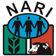

<div fxLayout="row wrap" fxLayoutAlign="center center" class="layout-wrapper">
  <div fxFlex="98%" fxFlex.lt-md="100%" class="flex-wrapper">
    
    <mat-toolbar>

      <button mat-icon-button *ngIf="sidenav.mode === 'over'" (click)="sidenav.toggle()">
        <mat-icon *ngIf="!sidenav.opened">
          menu
        </mat-icon>
        <mat-icon *ngIf="sidenav.opened">
          close
        </mat-icon>
      </button>

      <div fxHide.gt-xs>
        <span>
          
        </span>
      </div>

      <div fxShow.gt-sm fxLayout="row" fxLayoutAlign="space-between">

        <div fxShow="true" fxHide.lt-sm="true">
          <span>
            
          </span>
        </div>

        <div>
          <span>
            <h1>National Agricultural Research Institute</h1>
          </span>
          <span>
            <h6>Promoting Agricultural Research for Sustainable Development</h6>
          </span>
        </div>

      </div>

      <span class="button-spacer"></span>
      <div fxLayout="row" fxFlexAlign="end" fxShow="true" fxHide.lt-sm="true">
        <button mat-icon-button class="tooltip">
          <mat-icon>home</mat-icon>
          <span class="tooltiptext">Home</span>
        </button>
        <button mat-icon-button class="tooltip">
          <mat-icon>info</mat-icon>
          <span class="tooltiptext">About</span>
        </button>
        <button mat-icon-button class="tooltip">
          <mat-icon>login</mat-icon>
          <span class="tooltiptext">Login</span>
        </button>
      </div>

    </mat-toolbar>

  </div>
</div>

<mat-sidenav-container>
  <mat-sidenav #sidenav="matSidenav" class="mat-elevation-z8">

    <!-- 

    <h4 class="name">John Smith</h4>
    <p class="designation">Software Engineer</p> -->

    <div mat-button class="menu-title"> 
      <mat-icon>format_list_bulleted</mat-icon>
      Applications
    </div>

    <mat-divider></mat-divider>

    <button mat-button class="menu-button" [routerLink]="['calls']">
      <mat-icon>home</mat-icon>
      <span>home</span>
    </button>

    <button mat-button class="menu-button" [routerLink]="['calls/create-edit']">
      <mat-icon>contact_phone</mat-icon>
      <span>menu one</span>
    </button>
    <button mat-button class="menu-button">
      <mat-icon>contacts</mat-icon>
      <span>menu two</span>
    </button>
    <button mat-button class="menu-button">
      <mat-icon>people</mat-icon>
      <span>menu three</span>
    </button>

    <mat-divider></mat-divider>

    <button mat-button class="menu-button">
      <mat-icon>help</mat-icon>
      <span>Help</span>
    </button>

  </mat-sidenav>

  <mat-sidenav-content>
    <div class="content mat-elevation-z8">

      <router-outlet></router-outlet>

    </div>
  </mat-sidenav-content>
  
</mat-sidenav-container>